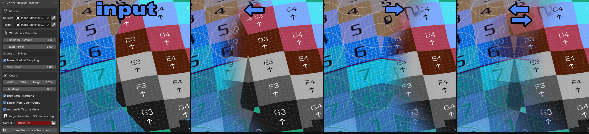

TEX Bake Transition Worldspace
bake worldspace transition texture between two meshes

Metadata
bake worldspace transition texture between two meshes
Bake a continuous transitional texture in world space
Projects the source mesh's material textures onto the target mesh's UV layout by finding the nearest point on the source for each target texel, sampling the source texture, and applying a smooth distance-based falloff. Supports bidirectional baking, mirror/unfold sampling, UV margin dilation, bilinear/nearest filtering, and automatic filename generation.
TEX Bake Transition Worldspace Bakes a continuous transition texture in world space between two mesh objects. For each texel in the target mesh's UV layout, finds the nearest point on the source mesh, samples the source material's texture at that point, and writes the color with a smooth falloff based on the 3D distance between the two meshes. Useful for creating blend masks where two meshes meet. Supports: - Bidirectional baking (forward + reverse in one operation) - Mirror / unfold sampling to reduce seam artifacts - Configurable falloff power and transition distance - Bilinear or nearest-neighbor source texture filtering - UV margin dilation to fill gaps between UV islands - Automatic filename generation from source/target texture names
Properties
| Attr | Label | Type | Default | Range | Subtype / Options | Description |
|---|---|---|---|---|---|---|
source | Source | pointer | type=bpy.types.Object poll=_mesh_poll | |||
target | Target | pointer | type=bpy.types.Object poll=_mesh_poll | |||
width | Width | int | 1024 | 16 .. 8192 | ||
height | Height | int | 1024 | 16 .. 8192 | ||
max_distance | Transition Distance | float | 0.1 | 1e-06 .. | DISTANCE soft_max=10 | |
falloff_power | Falloff Power | float | 1 | 0.05 .. 16 | ||
mirror_sampling | Mirror / Unfold Sampling | bool | true | |||
mirror_scale | Mirror Scale | float | 1 | 0 .. 8 | ||
filtering | Source Filtering | enum | BILINEAR | |||
margin | UV Margin | int | 8 | 0 .. 64 | PIXEL | |
bidirectional | Bake Both Directions | bool | true | |||
auto_filename | Automatic Texture Name | bool | true | |||
output_name | Image Name | string | Worldspace_Transition | |||
output_file | File Name | string | worldspace_transition.png | |||
output_directory | Output Directory | string | //textures/ | DIR_PATH | ||
linear_output | Linear (Non-Color) Output | bool | true | Save the output texture as Non-Color instead of sRGB. Enable for blend masks / data textures; disable for color textures. |
Enum Items
Enum: filtering (Source Filtering)
| Identifier | Label | Description |
|---|---|---|
BILINEAR | Bilinear | Bilinear source texture sampling |
NEAREST | Nearest | Nearest source texel sampling |
Operators
| Class | bl_idname | Label | Options | Description |
|---|---|---|---|---|
ZENV_OT_TransitionSetSource | zenv.transition_set_source | Set Active as Source | ||
ZENV_OT_TransitionSetTarget | zenv.transition_set_target | Set Active as Target | ||
ZENV_OT_BakeWorldspaceTransition | zenv.bake_worldspace_transition | Bake Worldspace Transition |